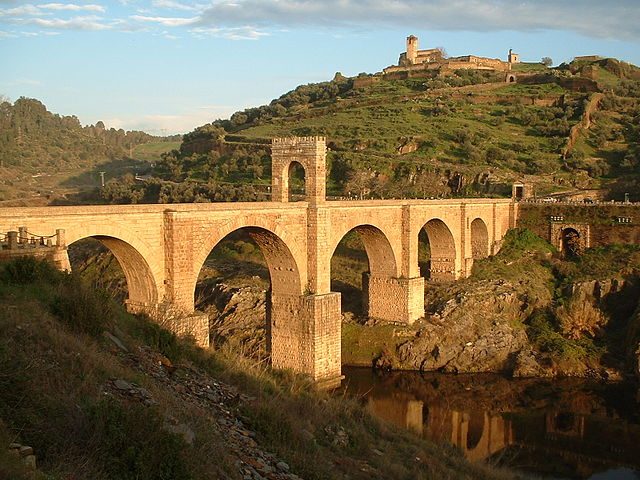
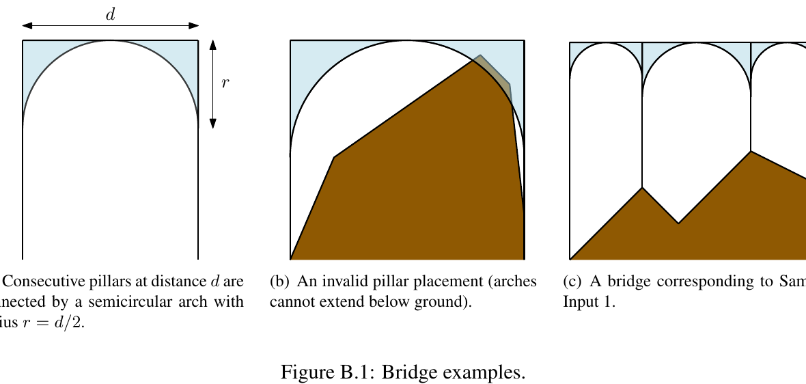

ICPC World Finals 2019 · Problem B
What connects us all? Well, it is often bridges. Since ancient times, people have been building bridges for roads, for trains, for pedestrians, and as aqueducts to transport water. It is humanity’s way of not taking inconvenient geography for an answer.

The company Arch Bridges Construction (ABC) specializes in—you guessed it—the construction of arch bridges. This classical style of bridge is supported by pillars that extend from the ground below the bridge. Arches between pillars distribute the bridge’s weight onto the adjacent pillars.
The bridges built by ABC often have pillars spaced at irregular intervals. For aesthetic reasons, ABC’s bridges always have semicircular arches, as illustrated in Figure B.1. However, while a bridge arch can touch the ground, it cannot extend below the ground. This makes some pillar placements impossible.

Given a ground profile and a desired bridge height h, there are usually many ways of building an arch bridge. We model the ground profile as a piecewise-linear function described by n key points (x1, y1), (x2, y2), …, (xn, yn), where the x-coordinate of a point is the position along the bridge, and the y-coordinate is the elevation of the ground above sea level at this position along the bridge. The first and last pillars must be built at the first and last key points, and any intermediate pillars can be built only at these key points. The cost of a bridge is the cost of its pillars (which is proportional to their heights) plus the cost of its arches (which is proportional to the amount of material used). So a bridge with k pillars of heights h1, …, hk that are separated by horizontal distances d1, …, dk−1 has a total cost of α·∑i=1k hi + β·∑i=1k−1 di2 for some given constants α and β. ABC wants to construct each bridge at the lowest possible cost.
The first line of input contains four integers n, h, α, and β, where n (2 ≤ n ≤ 104) is the number of points describing the ground profile, h (1 ≤ h ≤ 105) is the desired height of the bridge above sea level, and α, β (1 ≤ α, β ≤ 104) are the cost factors as described earlier. Then follow n lines, the ith of which contains two integers xi, yi (0 ≤ x1 < x2 < … < xn ≤ 105 and 0 ≤ yi < h), describing the ground profile.
Output the minimum cost of building a bridge from horizontal position x1 to xn at height h above sea level. If it is impossible to build any such bridge, output impossible.
5 60 18 2 0 0 20 20 30 10 50 30 70 20
6460
4 10 1 1 0 0 1 9 9 9 10 0
impossible